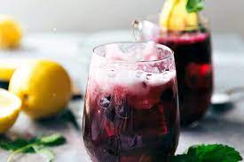

Limonada de arandanos

Description
Rica limonada de arandanos acompañado de limones y un poco de acido,
es perfecta para apaciguar la sed que se puede llegar a causar
Sin duda es muy perfecta como calmante sediento, ya que ayuda a no
morirse de sed, en caso de que llegara a pasar. que boludes estoy
escribiendo.
Ingredients
- Arándanos frescos.
- Edulcorante de stevia.
- Limón recién exprimido.
- Agua.
Steps cooking
- Combine los arándanos, el edulcorante, el jugo de limón y 1 taza
de agua en una licuadora; mezclar hasta que esté suave.
Vierta en una jarra. Agregue el agua restante y revuelva.